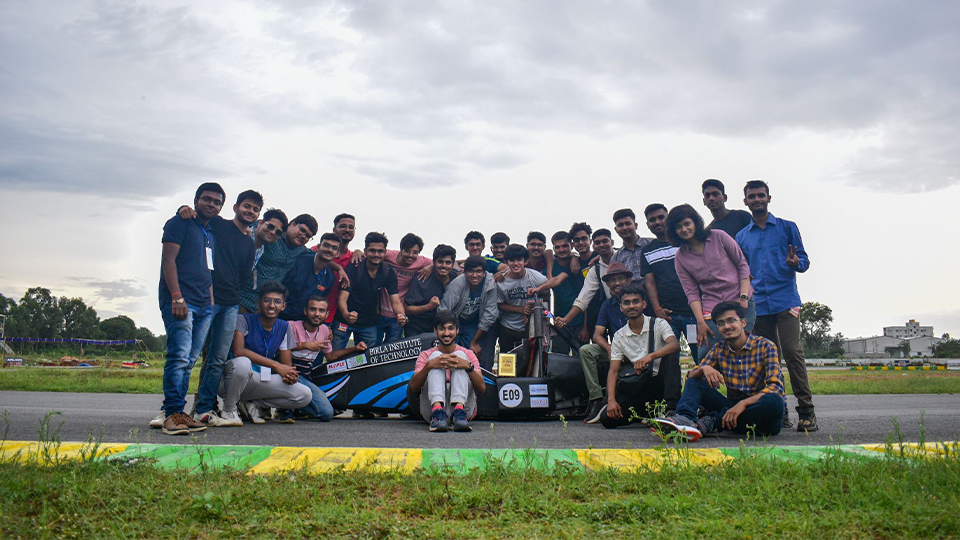

NewsLetters
-

The News
Team Srijan is one of the oldest technical clubs of BIT Mesra, which has been growing steadily since 2007. It is a group of undergraduate students from various branches of engineering who work together to design, conceive and manufacture the prototype of a formula race car to participate in Formula Student competitions held across the globe. We are bonded together by our passion to innovate and apply our knowledge to practical scenarios.
14 March, 2014 -
Our Goal for This week
Team Srijan is one of the oldest technical clubs of BIT Mesra, which has been growing steadily since 2007. It is a group of undergraduate students from various branches of engineering who work together to design, conceive and manufacture the prototype of a formula race car to participate in Formula Student competitions held across the globe. We are bonded together by our passion to innovate and apply our knowledge to practical scenarios.
14 March, 2014 -
Our Strategy
Team Srijan is one of the oldest technical clubs of BIT Mesra, which has been growing steadily since 2007. It is a group of undergraduate students from various branches of engineering who work together to design, conceive and manufacture the prototype of a formula race car to participate in Formula Student competitions held across the globe. We are bonded together by our passion to innovate and apply our knowledge to practical scenarios.
14 March, 2014